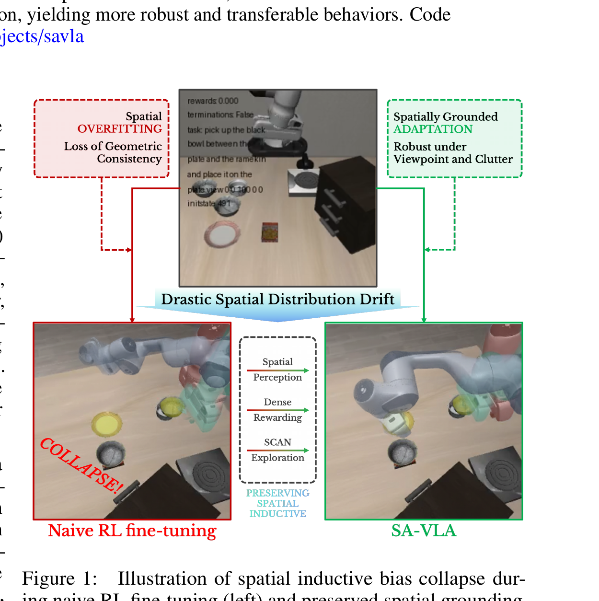

SA-VLA: Spatially-Aware Flow-Matching for Vision-Language-Action Reinforcement Learning
Pan 等 · Nanyang Technological University · 2026 · arXiv:2602.00743 · Zotero AM2WF9BS
它把‘RL 后训练破坏泛化’从经验现象具体化为空间偏置侵蚀，并对表示—奖励—探索三处同时干预。
§1 Introduction：作者为什么必须做这篇工作
VLA 做 RL 后训练时，训练任务成功率可能上升，换一个物体位置却更差。作者把它诊断为 spatial inductive bias 被稀疏奖励侵蚀：critic 更容易奖励短期视觉捷径，而不是保持物体—末端执行器的几何关系。
SA-VLA 同时改三处：把隐式空间表征融合进视觉 token；用几何进度构造 dense reward；用 SCAN 在 flow dynamics 中进行空间条件退火探索。它不是单一 loss，而是让表示、奖励与探索都围绕同一物理几何量对齐。
展开原文 · 核心动机
“preserves spatial grounding during policy optimization”
§2 Related Work：它接在哪些路线之后
VLA 的空间增强常依赖 3D token、深度或几何提示，但多数只在 SFT 阶段改善感知。常规 RL fine-tuning 则把奖励当唯一真值，可能把预训练的空间泛化换成训练布局上的短期成功。
与只加坐标编码的方法不同，SA-VLA 还要求 critic 奖励和探索噪声遵守任务几何；与行为克隆正则相比，它不只是阻止参数移动，而是给策略更明确的空间学习方向。
§3 问题设定：状态、动作与反馈
输入含 RGB、本体状态和语言；空间模块估计任务相关几何关系。dense reward 衡量末端、目标与障碍的进度，SCAN 根据空间条件调节 flow exploration。
§4 方法总览：沿原图走一遍
上一节确定了学习接口；现在看论文原图，追踪观测如何变成动作、环境反馈又如何回到可训练模块。

1. 从视觉与本体状态提取空间关系
从 RGB 与本体状态估计末端、目标和障碍的相对空间关系。输出不是单纯坐标，而是与当前语言任务相关的几何表示，为跨位置泛化提供明确锚点。
输入是什么：相机图像或视频，加上任务指令和机器人当前状态。它们还是原始观测，模型尚未把它们变成可用于预测或控制的特征。
这一步究竟做什么：从 RGB 与本体状态估计末端、目标和障碍的相对空间关系。输出不是单纯坐标，而是与当前语言任务相关的几何表示，为跨位置泛化提供明确锚点。
输出到哪里：经过本步骤处理、含义更明确的中间结果。这个结果会交给下一步“把空间表征融合进 VLA token”继续处理。
为什么不能省略：它把未经处理的原始问题变成后续模块可以计算的输入，是整条链路的起点。
2. 把空间表征融合进 VLA token
空间表示与视觉 token 融合后进入 VLA，使 action expert 同时看到语义外观和物理关系。这样 RL 更新不必只依赖容易变化的像素纹理，也更难用背景捷径替代真实几何。
输入是什么：来自上一步“从视觉与本体状态提取空间关系”的产物：经过本步骤处理、含义更明确的中间结果。本步骤还会按论文设置读取当前条件、时间步或训练信号。
这一步究竟做什么：空间表示与视觉 token 融合后进入 VLA，使 action expert 同时看到语义外观和物理关系。这样 RL 更新不必只依赖容易变化的像素纹理，也更难用背景捷径替代真实几何。
输出到哪里：一组比原始输入更紧凑的内部特征；它不是最终动作或画面。这个结果会交给下一步“用几何进度奖励训练 critic”继续处理。
为什么不能省略：模型不能高效地直接在所有原始像素和长序列上推理；这一步把信息压成后续模块能处理、比较和复用的形式。
3. 用几何进度奖励训练 critic
critic 使用任务成败加距离进步、对齐或避障等几何 dense reward。中间状态因此有可区分价值，减少稀疏终点奖励把错误信用分给短期视觉线索。
输入是什么：来自上一步“把空间表征融合进 VLA token”的产物：一组比原始输入更紧凑的内部特征；它不是最终动作或画面。本步骤还会按论文设置读取当前条件、时间步或训练信号。
这一步究竟做什么：critic 使用任务成败加距离进步、对齐或避障等几何 dense reward。中间状态因此有可区分价值，减少稀疏终点奖励把错误信用分给短期视觉线索。
输出到哪里：一个分数、奖励或价值估计，用来比较候选，而不是直接控制机器人。这个结果会交给下一步“SCAN 逐步退火探索并更新 flow policy”继续处理。
为什么不能省略：只有生成候选而没有评价标准，模型不知道哪个结果更好；这一步把‘好坏’变成可比较的学习信号。
4. SCAN 逐步退火探索并更新 flow policy
SCAN 根据当前空间条件和 flow timestep 退火探索噪声，再更新 flow policy。远离目标时允许更广搜索，接近精细接触时收紧扰动，以兼顾探索与空间稳定性。
输入是什么：来自上一步“用几何进度奖励训练 critic”的产物：一个分数、奖励或价值估计，用来比较候选，而不是直接控制机器人。本步骤还会按论文设置读取当前条件、时间步或训练信号。
这一步究竟做什么：SCAN 根据当前空间条件和 flow timestep 退火探索噪声，再更新 flow policy。远离目标时允许更广搜索，接近精细接触时收紧扰动，以兼顾探索与空间稳定性。
输出到哪里：参数得到更新的模型，或能供下一轮训练使用的新监督信号。这是图中这条链路的最终产物，随后会进入真实执行、模型更新或指标评测。
为什么不能省略：前面的数据或分数本身不会自动改变模型；必须通过损失函数把误差信号变成参数更新。
§5 机制细拆：为什么这个接口可能有效
稀疏成功奖励之外加入几何进度，让接近、对齐、避障等中间动作获得可区分反馈。
对 flow action expert 做 RL 适配，同时用空间表征保持跨位置泛化。
它把‘RL 后训练破坏泛化’从经验现象具体化为空间偏置侵蚀，并对表示—奖励—探索三处同时干预。
§6 目标函数：公式逐项读
下面的教学化表达抓住论文的主要更新方向；读它时不要只看符号，要检查回报作用在哪个变量、哪些部分保持冻结。
- $r_t^{\mathrm{task}}$
- 原始任务成功/失败奖励。
- $d_{t-1}-d_t$
- 到目标的几何距离进步，靠近目标时为正。
- $G(s_t)$
- 更一般的空间约束项，如对齐或避障。
- $\lambda_d,\lambda_g$
- 平衡任务完成与几何过程监督。
§7 训练与评测：数字在什么条件下成立
多物体、杂乱操作与明显空间位置变化的基准；对照 naive RL、只加空间 token、只加 dense reward、只加 SCAN 和完整 SA-VLA。
| 学习接口 | 输入含 RGB、本体状态和语言；空间模块估计任务相关几何关系。dense reward 衡量末端、目标与障碍的进度，SCAN 根据空间条件调节 flow exploration。 |
|---|---|
| 信用分配 | 稀疏成功奖励之外加入几何进度，让接近、对齐、避障等中间动作获得可区分反馈。 |
| 更新范围 | 对 flow action expert 做 RL 适配，同时用空间表征保持跨位置泛化。 |
| 实验覆盖 | 多物体、杂乱操作与明显空间位置变化的基准；对照 naive RL、只加空间 token、只加 dense reward、只加 SCAN 和完整 SA-VLA。 |
§8 结果怎么读：证据与归因
完整方法在训练布局和 zero-shot 空间偏移上都更稳定；应重点看跨位置、跨背景和多物体组合，而非只看训练分布平均成功率。
§9 复现与工程检查
空间量必须从真实可得传感器计算，不能偷用评测时 simulator privileged state；分别消融三模块；在相同训练成功率下比较 OOD 泛化。
- 先复现冻结的 SFT/BC 基线，再打开 RL 或偏好更新。
- 同时记录环境步、墙钟时间、人工干预、策略版本和推理延迟。
- 逐任务保存失败轨迹，避免平均成功率掩盖分布偏移。
§10 适用边界与研究启发
dense 几何奖励可能依赖位姿估计；几何先验不等于语义规划；若感知空间关系本身错误，SCAN 可能放大错误探索。